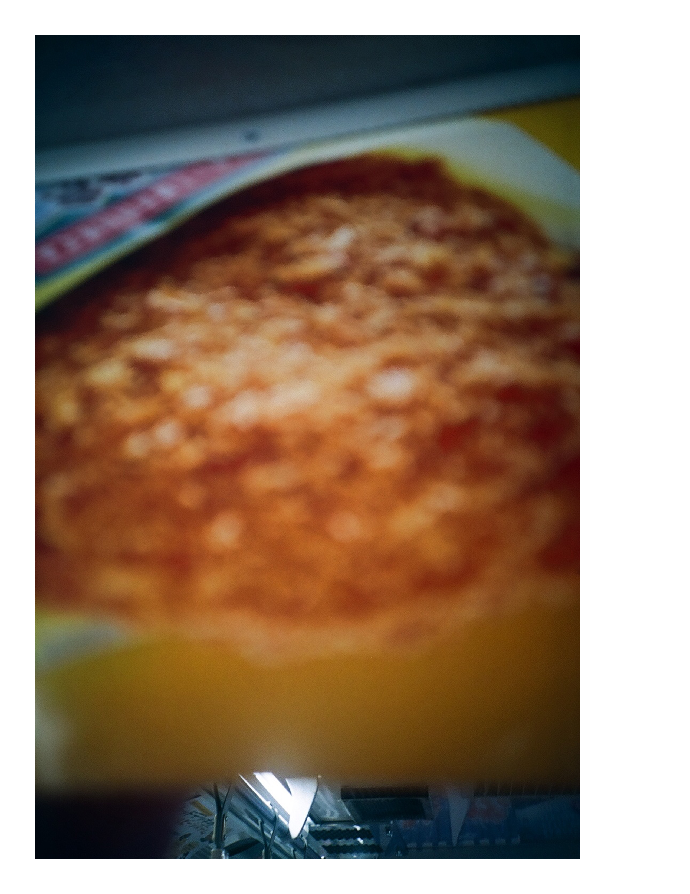

PLAYCANASTA.ORG
Canasta Radio #2
Intro
The Beach Boys - Don't Go Near the Water
Kitty Wells - This World Holds Nothing
Liz Phair - Go West
Rikk Agnew - O.C. Life
Robinson Dies in L.A.
Sam Samudio - 15° ASC
Reatards - Fashion Victim
Tommy Tate - You're Not to Blame
Nihilist Michel - Variations for the New Yorker
Royal Trux - Ray O Vac
Oh No
Burt Bacharach - I Might Frighten Her Away
renorT etravS - muzruB
Miles Davis - Agitation (Sped Up Excerpt)
Graham Lambkin - Axion
Love Child - Company
--
canastaarchive@gmail.com

I was out one afternoon, sitting on the curb, when a friend of mine passed by and asked if I wanted to go with him to check out some wall decals.
I wasn't sure what he meant but it sounded like something fun to see.
We walked a few blocks and around through some sliding garage doors into an open concrete warehouse.
There was a small drywalled room near the opening.
My friend walked over and talked there with a woman through a screened window.
She exited the room through a door on the opposite side and walked out onto the floor.
My friend followed and waved for me to do the same.
The warehouse was mostly empty.
Some guys in hardhats were off in the distance building slanted metal objects that looked like pipe frames for car sized cheese wedges.
The woman led us to a couple rows of wall decals stacked on the floor.
She told us to take our time and returned to her small room.
My friend and I walked slowly along the first row.
An elephant, an oak tree, a carnival big top, a football player, things like that.
At the end there was a massive rectangular image of a commercial jet control panel and windshield during a late afternoon, possibly early morning, flight.
"This is interesting, like a giant airplane" my friend said pointing to the image.
Moving on there was a row of life sized, x rated, wall decals of women in revealing poses.
My friend stood by an image of a woman spread out like a starfish.
He pointed and said "can you show me a more naked woman?"
He grinned and shook his head.
The men in hardhats started to make a lot of noise sawing some metal pipes.
Sparks were flying around and the men were yelling.
I thanked my friend for bringing me along but told him I had to go.
We shook hands and I walked back towards the garage doors.
As I passed by the small room I saw the woman inside using a xerox machine.
Outside there were rusted sheets of corrugated steel resting against the building.
They were probably about 20 square feet.
I stood by them for awhile and smoked a cigarette.
It started to rain quite a lot so I walked around the alley and into a nearby McDonalds.
I ordered a double cheeseburger at the machine by the door and waited there.
Fifteen or so people crowded around the counter holding receipts.
A kind of old woman with long grey hair was sitting at a corner table eating a Big Mac with black leather gloves on.
She had a pair of sunglasses hanging off the tip of her nose.
"Some guys pay good money for that stuff" I thought.
3 Italian guys with hiking backpacks came in and pushed past me to order food at the machine.
They didn't seem to know much English and they kept saying "patata, patata."
One of them said "okay" loudly at another one.
Their backpacks shook and the zippers made rattling sounds as they tapped on the touch screen.
Suddenly I was pushed forward again.
This time by what seemed to be an entire lesbian baseball team.
They were wearing royal purple jerseys and gray pants with double purple stripes down the side.
Some of them were very wet and wringing their hats out onto the floor.
All of them were cursing the rain and saying "rainout."
They took turns at the machine.
The Italian guys pushed past me again towards the counter holding their receipts in the air.
A small woman with reading glasses on was calling numbers.
"386" she said and a guy came up and got his tray.
This continued for awhile.
More people came in and I slowly inched closer to the counter.
By the time I got my burger the gloved woman had finished her Big Mac and left.
I took her seat at the corner table.
A sophisticated scent lingered in the air likely from the woman's perfume.
A little like smokey cat pee.
I ate my burger.
The baseball women seemed to order trays full of chicken nuggets.
They laughed and slapped each other on the back as they ate.
The Italian guys yelled at each other.
They passed around a tiny map and drank small cups of water.
I left and the rain was worse so I ran home.
--
FREE POSTER SERIES 2


FREE POSTER SERIES 1
